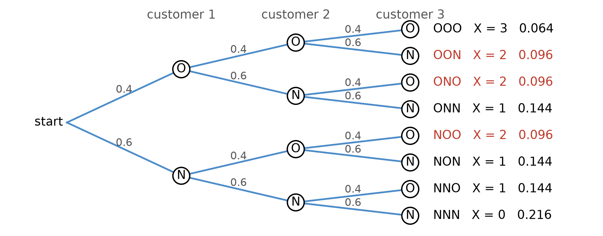
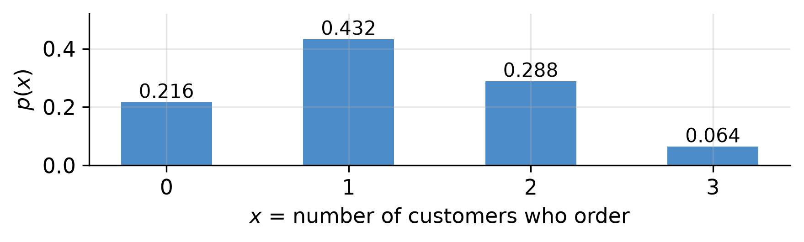
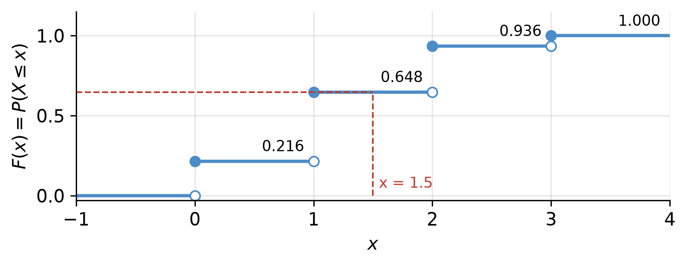

3 Discrete random variables
\[ \newcommand{\E}{\mathbb{E}} \newcommand{\Var}{\operatorname{Var}} \newcommand{\Cov}{\operatorname{Cov}} \newcommand{\Corr}{\operatorname{Corr}} \newcommand{\Prob}{\mathbb{P}} \newcommand{\R}{\mathbb{R}} \]
Marat runs a small optician’s shop on Bauman Street in Kazan. On Saturday mornings he offers a free eye test, and this Saturday three customers have booked one. From experience, a customer orders glasses after the test with probability 0.4. The three don’t know each other, so each decides independently. A pair of glasses earns Marat 2,000 rubles, and each free test costs him 500 rubles in time and materials. (The coffee machine in the waiting room has been broken since October, which costs him nothing but some goodwill.)
Marat wants two numbers before Saturday. How many pairs should he expect to sell? And how far from that number does a typical Saturday land? Both questions are about one number we don’t know in advance: how many of the three customers order. A number like that is called a random variable.
3.1 Random variables
Marat doesn’t care which customers order. He cares how many. The outcome of the morning is a list such as “first yes, second no, third yes”, and the thing he wants is a number computed from that list.
Definition 3.1 (Random variable) A random variable is a rule that gives a number to every outcome of an experiment. In the language of Lecture 1, it is a function from the sample space \(\Omega\) to the real numbers: each outcome gets exactly one number. We name random variables with capital letters: \(X\), \(Y\), \(Z\).
Example 3.1 (Marat’s eight outcomes) Given: 3 customers; each one orders glasses (O) or does not (N). \(X\) is the number of customers who order.
Write an outcome as three letters, one per customer in the order they arrive: ONO means the first and third customers order and the second doesn’t. Each customer has 2 possibilities, so by the product rule (Theorem 1.3) there are \(2\cdot2\cdot2=8\) outcomes: \[ \Omega=\{\text{OOO},\ \text{OON},\ \text{ONO},\ \text{ONN},\ \text{NOO},\ \text{NON},\ \text{NNO},\ \text{NNN}\}. \] \(X\) counts the letters O. So \(X(\text{OOO})=3\); \(X(\text{OON})=X(\text{ONO})=X(\text{NOO})=2\); \(X(\text{ONN})=X(\text{NON})=X(\text{NNO})=1\); \(X(\text{NNN})=0\). The possible values of \(X\) are \(0,1,2,3\). Figure 3.1 shows the same thing as a tree, drawn as in Lecture 2 (Figure 2.2). Three different mornings end with \(X=2\): \(X\) throws away the detail Marat doesn’t need.
NoteHow to read \(X\), \(x\) and \(\lbrace X=2\rbrace\)
- \(X\) (capital, “big X”) is the random variable: the number of orders we will see on Saturday, not known yet.
- \(x\) (small, “small x”) is a possible value of it: an ordinary number such as 0, 1, 2 or 3.
- \(\{X=2\}\) is an event. Read it “the event that \(X\) equals 2”. It is the set of outcomes where \(X\) takes the value 2. For Marat, \(\{X=2\}=\{\text{OON},\text{ONO},\text{NOO}\}\), the three red leaves in Figure 3.1.
- \(\{X\le 1\}\) reads “the event that \(X\) is at most 1”. For Marat, \(\{X\le1\}=\{X=0\}\cup\{X=1\}=\{\text{NNN},\text{ONN},\text{NON},\text{NNO}\}\).
- \(\Prob(X=2)\) is short for \(\Prob(\{X=2\})\). We drop the curly brackets inside \(\Prob\).
3.2 The probability mass function
Definition 3.2 (Discrete random variable, PMF) A random variable \(X\) is discrete if its possible values can be listed: \(x_1, x_2, x_3,\dots\). The probability mass function (PMF) of \(X\) is \[ p(x)=\Prob(X=x), \] for each value \(x\) of \(X\).
Marat’s \(X\) has four values, so it is discrete. In Lecture 4 we meet random variables that are not, such as a waiting time.
NoteHow to read \(p(x)\)
\(p(x)\) is read “p of x”. It is a function: a machine that takes a number \(x\) and gives back a probability. It is not \(p\) times \(x\). For Marat, \(p(2)\) (“p of two”) means \(\Prob(X=2)\), the probability that exactly two customers order. We’ll find in a moment that \(p(2)=0.288\). For a number that \(X\) never takes, the answer is zero: \(p(1.5)=\Prob(X=1.5)=0\), since nobody orders one and a half pairs.
Example 3.2 (Marat’s PMF) Given: 3 customers; each orders glasses with probability 0.4 and does not with probability 0.6; they decide independently. \(X\) is the number who order. Find the PMF of \(X\).
Solution. Take one path of the tree, say ONN. The customers are independent (Definition 2.3), so the probability of the path is the product along it: \(\Prob(\text{ONN})=0.4\cdot0.6\cdot0.6=0.144\). Do the same for every path (the leaves of Figure 3.1), then collect the paths by the value of \(X\). Different paths are mutually exclusive, so their probabilities add.
- \(X=0\): only NNN. \(p(0)=0.6\cdot0.6\cdot0.6=0.216\).
- \(X=1\): ONN, NON, NNO, each \(0.4\cdot0.6\cdot0.6=0.144\). \(p(1)=3\cdot0.144=0.432\).
- \(X=2\): OON, ONO, NOO, each \(0.4\cdot0.4\cdot0.6=0.096\). \(p(2)=3\cdot0.096=0.288\).
- \(X=3\): only OOO. \(p(3)=0.4\cdot0.4\cdot0.4=0.064\).
| \(x\) | 0 | 1 | 2 | 3 |
|---|---|---|---|---|
| \(p(x)=\Prob(X=x)\) | 0.216 | 0.432 | 0.288 | 0.064 |
The four probabilities add up to \(0.216+0.432+0.288+0.064=1\). Figure 3.2 shows them as a bar chart.

The most likely value is 1, not 0. Each customer is more likely to say no than yes, but there is only one way to get three noes and three ways to get exactly one yes.
NoteHow to read the summation sign \(\sum\)
\(\sum\) is the Greek capital letter sigma, an S for “sum”. It means “add up”. You saw it in the law of total probability (Equation 2.2); now we read it properly. \[ \sum_{i=1}^{4} p(x_i) \] reads “the sum of p of x i, for i from 1 to 4”. The letter \(i\) is the index, a counter. The number under the sign says where \(i\) starts, the number on top says where it stops. Put \(i=1\), then \(i=2\), \(i=3\), \(i=4\) into the expression and add the results.
\(x_1, x_2, x_3, x_4\) (“x one, x two, …”) are the values of \(X\) in a list: \(x_1\) is the first value, \(x_2\) the second, and so on. The small number counts positions in the list; it is not the value itself. For Marat, \(x_1=0\), \(x_2=1\), \(x_3=2\), \(x_4=3\), so \[ \begin{aligned} \sum_{i=1}^{4} p(x_i)&=p(x_1)+p(x_2)+p(x_3)+p(x_4)\\ &=p(0)+p(1)+p(2)+p(3)\\ &=0.216+0.432+0.288+0.064=1. \end{aligned} \] When the sum runs over all values of \(X\), we often write just \(\sum_i\) and leave out the start and the stop.
Theorem 3.1 (Properties of a PMF) Let \(X\) be a discrete random variable with values \(x_1, x_2,\dots\) and PMF \(p\). Then
- \(p(x_i)\ge 0\) for every \(i\);
- \(\sum_i p(x_i)=1\).
Proof.
Each \(p(x_i)\) is a probability, and probabilities are non-negative (axiom 1 of Definition 1.4).
Every outcome gives \(X\) exactly one value, so it lies in exactly one of the events \(\{X=x_1\}, \{X=x_2\},\dots\). These events are pairwise mutually exclusive and together make up \(\Omega\): they form a partition (Definition 1.3). By axioms 3 and 2, \[ \sum_i p(x_i)=\Prob(X=x_1)+\Prob(X=x_2)+\dots=\Prob(\Omega)=1. \]
In practice Theorem 3.1 is a check: if your table does not add up to 1, a path is missing or counted twice.
3.3 The cumulative distribution function
Definition 3.3 (Cumulative distribution function) The cumulative distribution function (CDF) of a random variable \(X\) is \[ F(x)=\Prob(X\le x) \] for every real number \(x\).
A note on letters. In Lecture 2 the letter \(F\) was an event (a faulty bulb, a fraudulent payment). From now on \(F\) is the CDF.
NoteHow to read \(F(x)\), \(\le\) and \(<\)
\(F(x)\) reads “F of x”. Like \(p(x)\), it is a function: put in a number, get a probability. \(F(1)=\Prob(X\le 1)\) reads “the probability that \(X\) is at most 1”.
\(\le\) reads “less than or equal to”, or “at most”. \(<\) reads “less than”, or “strictly less than”. For Marat:
- \(X\le 1\) means \(X=0\) or \(X=1\), so \(\Prob(X\le1)=0.216+0.432=0.648\);
- \(X<1\) means \(X=0\) only, so \(\Prob(X<1)=0.216\).
For a discrete random variable the two signs give different answers whenever the boundary (here 1) is a value \(X\) can take. “Cumulative” means “piling up”: \(F(x)\) adds the probabilities of all values from the left up to \(x\).
Example 3.3 (Marat’s CDF) Given: Marat’s PMF, \(p(0)=0.216\), \(p(1)=0.432\), \(p(2)=0.288\), \(p(3)=0.064\). Find \(F(x)\) for every \(x\), and in particular \(F(1.5)\).
Solution. Add the probabilities from the left: \(F(0)=0.216\); \(F(1)=0.216+0.432=0.648\); \(F(2)=0.648+0.288=0.936\); \(F(3)=0.936+0.064=1\).
Between the values nothing new is added. \(F(1.5)=\Prob(X\le1.5)\), and the values of \(X\) that are at most 1.5 are 0 and 1, so \(F(1.5)=0.216+0.432=0.648\), the same as \(F(1)\). Also \(F(-1)=0\), because \(X\) is never negative, and \(F(5)=1\), because \(X\) is always at most 5. In one formula: \[ F(x)=\begin{cases} 0, & x<0,\\ 0.216, & 0\le x<1,\\ 0.648, & 1\le x<2,\\ 0.936, & 2\le x<3,\\ 1, & x\ge 3. \end{cases} \]

Every discrete CDF is a staircase like this. It answers interval questions with one subtraction. If \(a<b\), the event \(\{X\le b\}\) splits into two mutually exclusive pieces, \(\{X\le a\}\) and \(\{a<X\le b\}\). So \(F(b)=F(a)+\Prob(a<X\le b)\), which gives \[ \Prob(a<X\le b)=F(b)-F(a). \tag{3.1}\] For Marat (\(F(1)=0.648\), \(F(3)=1\)), the probability that 2 or 3 customers order is \(\Prob(1<X\le3)=F(3)-F(1)=1-0.648=0.352\). Check with the PMF: \(p(2)+p(3)=0.288+0.064=0.352\).
Watch the signs in Equation 3.1: \(<\) on the left, \(\le\) on the right. Students often use it for \(\Prob(1\le X\le 3)\) and get 0.352 again, but that event also contains \(X=1\). The correct answer is \(\Prob(1\le X\le3)=F(3)-F(0)=1-0.216=0.784\). With a discrete \(X\), always ask: is the boundary value included or not?
3.4 Expected value
Back to Marat’s first question: how many pairs should he expect to sell?
Definition 3.4 (Expected value) The expected value (also expectation or mean) of a discrete random variable \(X\) with values \(x_1,x_2,\dots\) and PMF \(p\) is \[ \E[X]=\sum_i x_i\,p(x_i). \] We also write \(\mu\) for \(\E[X]\).
NoteHow to read \(\E[X]\) and \(\mu\)
\(\E[X]\) reads “E of X” or “the expected value of X”. The \(\E\) is not a number multiplied by \(X\): it is an operation done to \(X\), and the square brackets hold the random variable. \(\mu\) is the Greek letter mu (said “myoo”). In this course \(\mu\) is the mean of a random variable, \(\mu=\E[X]\).
In words, the formula says: multiply each value by its probability, then add. For Marat, written out with the four values: \[ \begin{aligned} \E[X]&=0\cdot p(0)+1\cdot p(1)+2\cdot p(2)+3\cdot p(3)\\ &=0\cdot0.216+1\cdot0.432+2\cdot0.288+3\cdot0.064 . \end{aligned} \]
Example 3.4 (How many pairs Marat should expect) Given: Marat’s PMF, \(p(0)=0.216\), \(p(1)=0.432\), \(p(2)=0.288\), \(p(3)=0.064\).
Solution. \[ \E[X]=0\cdot0.216+1\cdot0.432+2\cdot0.288+3\cdot0.064=0+0.432+0.576+0.192=1.2 . \] Marat should expect 1.2 pairs per Saturday morning.
A weighted average. The plain average of the values 0, 1, 2, 3 is 1.5. But 3 is rare (0.064) and 0 is common (0.216). The expected value weights each value by its probability, and the weights pull it down to 1.2.
A long-run average. Imagine 1,000 Saturdays like this one. About 216 of them end with no order, 432 with one, 288 with two and 64 with three. That is about \(0\cdot216+1\cdot432+2\cdot288+3\cdot64=1{,}200\) pairs, or 1.2 per Saturday.
“Expected” does not mean “most likely” (that is 1), and it does not mean “what will happen”. Marat will never sell 1.2 pairs. The expected value does not have to be a value \(X\) can take.
3.5 Variance and standard deviation
Marat’s second question is how much the number of orders swings. First, one tool. We will want the expected value of things like \(X^2\). The rule is the same as for \(\E[X]\): compute the new quantity from each value of \(X\), weight it by the probability of that value, and add. For any function \(g\), \[ \E[g(X)]=\sum_i g(x_i)\,p(x_i). \tag{3.2}\] The reason: \(g(X)\) is a new random variable, and it takes the value \(g(x_i)\) exactly when \(X=x_i\).
NoteHow to read squares, square roots and \(\sigma\)
- \(X^2\) reads “X squared”: the random variable whose value is the square of the value of \(X\). If \(X=2\), then \(X^2=4\). By Equation 3.2, for Marat \(\E[X^2]=0^2\cdot0.216+1^2\cdot0.432+2^2\cdot0.288+3^2\cdot0.064\).
- \((X-\mu)^2\) reads “X minus mu, all squared”. Brackets first, then square. It is the squared distance of \(X\) from its mean. For Marat with \(\mu=1.2\): if \(X=0\), then \((0-1.2)^2=(-1.2)^2=1.44\).
- \(\sqrt{0.72}\) reads “the square root of 0.72”: the positive number whose square is 0.72. \(\sqrt{0.72}\approx0.85\) because \(0.85^2\approx0.72\).
- \(\sigma\) is the small Greek letter sigma. It is the standard deviation, and \(\sigma^2\) (“sigma squared”) is the variance.
- Units. \(X\) is in pairs of glasses, and so is \(X-\mu\). Then \((X-\mu)^2\) is in “pairs squared”, which means nothing to anyone. The square root brings us back to pairs.
Definition 3.5 (Variance and standard deviation) Let \(X\) have mean \(\mu=\E[X]\). The variance of \(X\) is \[ \Var(X)=\E\big[(X-\mu)^2\big]=\sum_i (x_i-\mu)^2\,p(x_i). \] The standard deviation of \(X\) is \(\sigma=\operatorname{SD}(X)=\sqrt{\Var(X)}\). So \(\Var(X)=\sigma^2\).
Why squares? The plain deviations \(X-\mu\) are positive above the mean and negative below it, and on average they cancel exactly: \(\sum_i(x_i-\mu)p(x_i)=\mu-\mu=0\). Squaring makes every deviation count, and big ones count much more.
Theorem 3.2 (Shortcut formula for the variance) \[ \Var(X)=\E[X^2]-\mu^2 . \]
Proof
Expand the square: \((x_i-\mu)^2=x_i^2-2\mu x_i+\mu^2\). Then \[ \begin{aligned} \Var(X)&=\sum_i x_i^2p(x_i)-2\mu\sum_i x_ip(x_i)+\mu^2\sum_i p(x_i)\\ &=\E[X^2]-2\mu\cdot\mu+\mu^2\cdot1=\E[X^2]-\mu^2, \end{aligned} \] using Equation 3.2, Definition 3.4 and Theorem 3.1.
Example 3.5 (How much Marat’s Saturdays swing) Given: Marat’s PMF, \(p(0)=0.216\), \(p(1)=0.432\), \(p(2)=0.288\), \(p(3)=0.064\), and mean \(\mu=1.2\). Find \(\Var(X)\) and \(\sigma\).
Solution by the definition. One row per value:
| \(x\) | \(x-1.2\) | \((x-1.2)^2\) | \(p(x)\) | \((x-1.2)^2\,p(x)\) |
|---|---|---|---|---|
| 0 | \(-1.2\) | 1.44 | 0.216 | 0.31104 |
| 1 | \(-0.2\) | 0.04 | 0.432 | 0.01728 |
| 2 | 0.8 | 0.64 | 0.288 | 0.18432 |
| 3 | 1.8 | 3.24 | 0.064 | 0.20736 |
The last column adds up to \(\Var(X)=0.72\).
Solution by the shortcut. First \(\E[X^2]=0\cdot0.216+1\cdot0.432+4\cdot0.288+9\cdot0.064=0.432+1.152+0.576=2.16\), then \(\Var(X)=2.16-1.2^2=2.16-1.44=0.72\). Same answer, less work.
The standard deviation is \(\sigma=\sqrt{0.72}\approx0.85\) pairs: a typical Saturday lands around 0.85 pairs away from the mean of 1.2.
The most common mistake here: \(\E[X^2]\) is not \((\E[X])^2\). For Marat, \(\E[X^2]=2.16\) and \((\E[X])^2=1.44\). The gap between them is the variance, and it is never negative. If your variance comes out negative, you subtracted the wrong way round.
3.6 Changing units: \(aX+b\)
Marat thinks in rubles, not pairs. Each pair earns 2,000 rubles, and the three free tests cost \(3\cdot500=1{,}500\) rubles whatever happens. His profit for the morning, in rubles, is \[ Y=2000X-1500 . \]
Theorem 3.3 (Expectation and variance of \(aX+b\)) Let \(a\) and \(b\) be numbers. Then \[ \E[aX+b]=a\,\E[X]+b,\qquad \Var(aX+b)=a^2\Var(X),\qquad \operatorname{SD}(aX+b)=|a|\operatorname{SD}(X). \]
NoteHow to read \(|a|\)
\(|a|\) reads “the absolute value of a”. It is \(a\) without its sign: \(|-3|=3\) and \(|3|=3\). In Lecture 2 the same bars around a set, \(|B|\), meant the number of its elements; around a number they mean the absolute value. So \(\operatorname{SD}(-X)=|-1|\cdot\operatorname{SD}(X)=\operatorname{SD}(X)\): a standard deviation is never negative.
Proof. For the expectation, use Equation 3.2 with \(g(x)=ax+b\): \[ \E[aX+b]=\sum_i(ax_i+b)p(x_i)=a\sum_i x_ip(x_i)+b\sum_i p(x_i)=a\,\E[X]+b\cdot1 . \]
Proof
For the variance, write \(\mu=\E[X]\). The mean of \(aX+b\) is \(a\mu+b\), so the deviation of \(aX+b\) from its mean is \((aX+b)-(a\mu+b)=a(X-\mu)\). The \(b\) has gone. Square it: \(a^2(X-\mu)^2\). Take the expected value, using the first part with the number \(a^2\) in front: \(\Var(aX+b)=a^2\E[(X-\mu)^2]=a^2\Var(X)\). Take square roots for the SD: \(\sqrt{a^2}=|a|\).
Example 3.6 (Marat’s profit in rubles) Given: 2,000 rubles per pair, 3 free tests at 500 rubles each, so the profit is \(Y=2000X-1500\) rubles. From Example 3.4 and Example 3.5: \(\E[X]=1.2\), \(\Var(X)=0.72\), \(\operatorname{SD}(X)\approx0.85\). Find \(\E[Y]\), \(\Var(Y)\) and \(\operatorname{SD}(Y)\).
Solution. Here \(a=2000\) and \(b=-1500\). By Theorem 3.3, \[ \begin{aligned} \E[Y]&=2000\cdot1.2-1500=2400-1500=900,\\ \Var(Y)&=2000^2\cdot0.72=4{,}000{,}000\cdot0.72=2{,}880{,}000,\\ \operatorname{SD}(Y)&=2000\cdot\sqrt{0.72}\approx 1{,}697 . \end{aligned} \] So the expected profit is 900 rubles and the standard deviation about 1,697 rubles. The variance is 2,880,000 “rubles squared”, a number nobody can picture: report the standard deviation. The swing is almost twice the mean, and about one Saturday in five (probability 0.216, no orders) is a loss of 1,500 rubles.
Two things go wrong here. First, \(b\) disappears from the variance. Paying 1,500 rubles for the tests shifts every profit down by the same amount, which moves the mean but not the spread. A popular wrong answer is \(\Var(Y)=2000\cdot0.72-1500\). Second, \(a\) is squared, so its sign disappears too: \(\Var(-X)=(-1)^2\Var(X)=\Var(X)\), never \(-\Var(X)\). Lecture 5 uses Theorem 3.3 for the normal distribution, so get it right now.
3.7 Bernoulli and binomial distributions
Look at one of Marat’s customers alone: either they order or they don’t.
Definition 3.6 (Bernoulli distribution) A random variable \(X\) has the Bernoulli distribution with parameter \(p\), where \(0\le p\le1\), if it takes only two values: \[ \Prob(X=1)=p,\qquad \Prob(X=0)=1-p . \] The value 1 is called a success and 0 a failure.
A parameter is a number that picks one member of a family of distributions: Bernoulli(0.4) and Bernoulli(0.9) are two members of one family. “Success” is just a label for what we count, even when it is something bad, such as a default.
The mean and variance take two lines. With values 0 and 1, \[ \E[X]=0\cdot(1-p)+1\cdot p=p,\qquad \E[X^2]=0^2\cdot(1-p)+1^2\cdot p=p, \] so by Theorem 3.2, \(\Var(X)=p-p^2=p(1-p)\). One of Marat’s customers is Bernoulli(0.4): mean 0.4, variance \(0.4\cdot0.6=0.24\).
Definition 3.7 (Binomial distribution) Repeat a trial \(n\) times, where
- the number of trials \(n\) is fixed in advance;
- each trial ends in success or failure;
- every trial has the same probability of success \(p\);
- the trials are independent.
Let \(X\) be the number of successes. Then \(X\) has the binomial distribution with parameters \(n\) and \(p\), written \(X\sim\operatorname{Bin}(n,p)\), and \[ \Prob(X=k)=\binom{n}{k}p^k(1-p)^{n-k},\qquad k=0,1,\dots,n . \tag{3.3}\]
NoteHow to read \(X\sim\operatorname{Bin}(n,p)\) and \(p^k(1-p)^{n-k}\)
The sign \(\sim\) (“tilde”) reads “has the distribution”. \(X\sim\operatorname{Bin}(3,\,0.4)\) reads “X has the binomial distribution with \(n=3\) and \(p=0.4\)”. That is Marat’s \(X\): 3 customers, success = an order, \(p=0.4\). A Bernoulli(\(p\)) variable is \(\operatorname{Bin}(1,p)\).
In Equation 3.3, \(k\) is a placeholder for “how many successes we ask about”. \(p^k\) means \(p\) multiplied by itself \(k\) times, and any number to the power 0 is 1. For Marat and \(k=1\): \[ p^1(1-p)^{3-1}=0.4^1\cdot0.6^2=0.4\cdot0.36=0.144, \] the probability of one particular path with one order, such as ONN. Then \(\binom{3}{1}=3\) counts those paths (ONN, NON, NNO), and \(\Prob(X=1)=3\cdot0.144=0.432\).
Why does Equation 3.3 hold in general? A sequence of \(n\) trials with exactly \(k\) successes and \(n-k\) failures has probability \(p^k(1-p)^{n-k}\), by independence (Definition 2.3). The number of such sequences is the number of ways to choose the \(k\) positions of the successes, \(\binom nk\) (Definition 1.8, Equation 1.2). Different sequences are mutually exclusive, so we add \(\binom nk\) equal probabilities. Check with Marat and \(k=2\): \(\binom32\cdot0.4^2\cdot0.6=3\cdot0.16\cdot0.6=0.288\), as in Example 3.2.
Theorem 3.4 (Mean and variance of the binomial distribution) If \(X\sim\operatorname{Bin}(n,p)\), then \[ \E[X]=np,\qquad \Var(X)=np(1-p). \]
Proof
Idea. Let \(X_j=1\) if trial \(j\) is a success and \(X_j=0\) if not. Each \(X_j\) is Bernoulli(\(p\)), and \(X=X_1+X_2+\dots+X_n\) counts the successes. In Lecture 6 we prove that the expected value of a sum is the sum of the expected values, so \(\E[X]=p+p+\dots+p=np\). For independent random variables the same holds for variances, so \(\Var(X)=n\cdot p(1-p)\).
For Marat, \(X\sim\operatorname{Bin}(3,\,0.4)\): \(\E[X]=3\cdot0.4=1.2\) and \(\Var(X)=3\cdot0.4\cdot0.6=0.72\), as in Example 3.4 and Example 3.5.
Exercises
- A guesthouse in Suzdal gets \(X\) late cancellations per weekend, with \(\Prob(X=0)=0.5\), \(\Prob(X=1)=0.3\) and \(\Prob(X=2)=c\), and no other values. Find \(c\), \(F(1.5)\), \(\Prob(X<1)\), \(\E[X]\) and \(\Var(X)\).
- The daily number of customers \(W\) of a food truck has \(\E[W]=50\) and \(\Var(W)=16\). Each customer pays 300 rubles, and the spot costs 4,000 rubles a day, so the daily profit is \(300W-4000\) rubles. Find its expected value and standard deviation. What is \(\Var(-W)\)?
- Binomial or not? One word each, then one line of reason. (a) The number of heads in 6 tosses of a fair coin. (b) The number of faulty bulbs among 2 bulbs taken without putting back from a box of 12 that has 3 faulty ones. (c) The number of customers Marat tests until the first one orders.
- Each of 5 visitors to a car showroom in Kaliningrad books a test drive with probability 0.2, independently of the others. Let \(X\) be the number who book. Find \(\Prob(X=2)\), \(\Prob(X\ge1)\), \(\E[X]\) and \(\Var(X)\).
Answers: (1) \(c=1-0.5-0.3=0.2\); \(F(1.5)=0.5+0.3=0.8\); \(\Prob(X<1)=\Prob(X=0)=0.5\); \(\E[X]=0.3+2\cdot0.2=0.7\); \(\E[X^2]=0.3+4\cdot0.2=1.1\), so \(\Var(X)=1.1-0.49=0.61\). (2) \(300\cdot50-4000=11{,}000\) rubles; \(\operatorname{SD}=300\cdot\sqrt{16}=1{,}200\) rubles; \(\Var(-W)=16\). (3) (a) Yes, \(\operatorname{Bin}(6,\,0.5)\). (b) No: after the first draw \(p\) changes to \(2/11\) or \(3/11\) (Lecture 2), so the trials are not independent. (c) No: the number of trials is not fixed (geometric distribution, Lecture 4). (4) \(\binom52\cdot0.2^2\cdot0.8^3=10\cdot0.04\cdot0.512=0.2048\); \(1-0.8^5=1-0.32768\approx0.672\); \(\E[X]=5\cdot0.2=1\); \(\Var(X)=5\cdot0.2\cdot0.8=0.8\). The full practice is in Seminar 3.